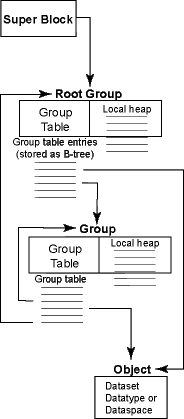
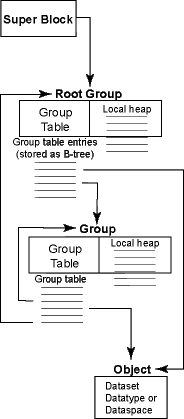

|
HDF5 documents and links Introduction to HDF5 |
HDF5 User's Guide HDF5 Reference Manual HDF5 Application Developer's Guide |
|
 | ||
|
Figure 1: Relationships among the HDF5 root group, other groups, and objects
| ||
|
| ||
|
Figure 2: HDF5 objects -- datasets, datatypes, or dataspaces
|
The format of an HDF5 file on disk encompasses several key ideas of the HDF4 and AIO file formats as well as addressing some shortcomings therein. The new format is more self-describing than the HDF4 format and is more uniformly applied to data objects in the file.
An HDF5 file appears to the user as a directed graph. The nodes of this graph are the higher-level HDF5 objects that are exposed by the HDF5 APIs:
At the lowest level, as information is actually written to the disk, an HDF5 file is made up of the following objects:
The HDF5 library uses these low-level objects to represent the higher-level objects that are then presented to the user or to applications through the APIs. For instance, a group is an object header that contains a message that points to a local heap and to a B-tree which points to symbol nodes. A dataset is an object header that contains messages that describe datatype, space, layout, filters, external files, fill value, etc with the layout message pointing to either a raw data chunk or to a B-tree that points to raw data chunks.
This document describes the lower-level data objects; the higher-level objects and their properties are described in the HDF5 User's Guide.
Three levels of information comprise the file format. Level 0 contains basic information for identifying and defining information about the file. Level 1 information contains the information about the pieces of a file shared by many objects in the file (such as a B-trees and heaps). Level 2 is the rest of the file and contains all of the data objects, with each object partitioned into header information, also known as metadata, and data.
The sizes of various fields in the following layout tables are determined by looking at the number of columns the field spans in the table. There are three exceptions: (1) The size may be overridden by specifying a size in parentheses, (2) the size of addresses is determined by the Size of Offsets field in the super block and is indicated in this document with a superscripted 'O', and (3) the size of length fields is determined by the Size of Lengths field in the super block and is indicated in this document with a superscripted 'L'.
Values for all fields in this document should be treated as unsigned integers, unless otherwise noted in the description of a field. Additionally, all metadata fields are stored in little-endian byte order.
The super block may begin at certain predefined offsets within the HDF5 file, allowing a block of unspecified content for users to place additional information at the beginning (and end) of the HDF5 file without limiting the HDF5 library's ability to manage the objects within the file itself. This feature was designed to accommodate wrapping an HDF5 file in another file format or adding descriptive information to the file without requiring the modification of the actual file's information. The super block is located by searching for the HDF5 file signature at byte offset 0, byte offset 512 and at successive locations in the file, each a multiple of two of the previous location, i.e. 0, 512, 1024, 2048, etc.
The super block is composed of a file signature, followed by
super block and group version numbers, information
about the sizes of offset and length values used to describe
items within the file, the size of each group page,
and a group entry for the root object in the file.
| byte | byte | byte | byte |
|---|---|---|---|
HDF5 File Signature (8 bytes) |
|||
| Version # of Super Block | Version # of Global Free-space Storage | Version # of Root Group Symbol Table Entry | Reserved (zero) |
| Version # of Shared Header Message Format | Size of Offsets | Size of Lengths | Reserved (zero) |
| Group Leaf Node K | Group Internal Node K | ||
| File Consistency Flags | |||
| Indexed Storage Internal Node K1 | Reserved (zero)1 | ||
| Base AddressO | |||
| Address of Global Free-space HeapO | |||
| End of File AddressO | |||
| Driver Information Block AddressO | |||
| Root Group Symbol Table Entry | |||
|
(Items marked with an 'O' the above table are
of the size specified in "Size of Offsets.") |
|
(Items marked with an '1' the above table are
new in version 1 of the superblock) |
| Field Name | Description | |||||||||||||||||||||||||||
|---|---|---|---|---|---|---|---|---|---|---|---|---|---|---|---|---|---|---|---|---|---|---|---|---|---|---|---|---|
| HDF5 File Signature |
This field contains a constant value and can be used to quickly identify a file as being an HDF5 file. The constant value is designed to allow easy identification of an HDF5 file and to allow certain types of data corruption to be detected. The file signature of an HDF5 file always contains the following values:
This signature both identifies the file as an HDF5 file and provides for immediate detection of common file-transfer problems. The first two bytes distinguish HDF5 files on systems that expect the first two bytes to identify the file type uniquely. The first byte is chosen as a non-ASCII value to reduce the probability that a text file may be misrecognized as an HDF5 file; also, it catches bad file transfers that clear bit 7. Bytes two through four name the format. The CR-LF sequence catches bad file transfers that alter newline sequences. The control-Z character stops file display under MS-DOS. The final line feed checks for the inverse of the CR-LF translation problem. (This is a direct descendent of the PNG file signature.) This field is present in version 0+ of the superblock. |
|||||||||||||||||||||||||||
| Version Number of the Super Block |
This value is used to determine the format of the information in the super block. When the format of the information in the super block is changed, the version number is incremented to the next integer and can be used to determine how the information in the super block is formatted. Values of 0 and 1 are defined for this field. This field is present in version 0+ of the superblock. |
|||||||||||||||||||||||||||
| Version Number of the File Free-space Information |
This value is used to determine the format of the information in the File Free-space Information. The only value currently valid in this field is '0', which indicates that the free space index is formatted as described below. This field is present in version 0+ of the superblock. |
|||||||||||||||||||||||||||
| Version Number of the Root Group Symbol Table Entry |
This value is used to determine the format of the information in the Root Group Symbol Table Entry. When the format of the information in that field is changed, the version number is incremented to the next integer and can be used to determine how the information in the field is formatted. The only value currently valid in this field is '0', which indicates that the root group symbol table entry is formatted as described below. This field is present in version 0+ of the superblock. |
|||||||||||||||||||||||||||
| Version Number of the Shared Header Message Format |
This value is used to determine the format of the information in a shared object header message. Since the format of the shared header messages differs from the other private header messages, a version number is used to identify changes in the format. The only value currently valid in this field is '0', which indicates that shared header messages are formatted as described below. This field is present in version 0+ of the superblock. |
|||||||||||||||||||||||||||
| Size of Offsets |
This value contains the number of bytes used to store addresses in the file. The values for the addresses of objects in the file are offsets relative to a base address, usually the address of the super block signature. This allows a wrapper to be added after the file is created without invalidating the internal offset locations. This field is present in version 0+ of the superblock. |
|||||||||||||||||||||||||||
| Size of Lengths |
This value contains the number of bytes used to store the size of an object. This field is present in version 0+ of the superblock. |
|||||||||||||||||||||||||||
| Group Leaf Node K |
Each leaf node of a group B-tree will have at least this many entries but not more than twice this many. If a group has a single leaf node then it may have fewer entries. This value must be greater than zero. See the description of B-trees below. This field is present in version 0+ of the superblock. |
|||||||||||||||||||||||||||
| Group Internal Node K |
Each internal node of a group B-tree will have at least this many entries but not more than twice this many. If the group has only one internal node then it might have fewer entries. This value must be greater than zero. See the description of B-trees below. This field is present in version 0+ of the superblock. |
|||||||||||||||||||||||||||
| File Consistency Flags |
This value contains flags to indicate information about the consistency of the information contained within the file. Currently, the following bit flags are defined:
This field is present in version 0+ of the superblock. |
|||||||||||||||||||||||||||
| Indexed Storage Internal Node K |
Each internal node of a indexed storage B-tree will have at least this many entries but not more than twice this many. If the group has only one internal node then it might have fewer entries. This value must be greater than zero. See the description of B-trees below. This field is present in version 1+ of the superblock. |
|||||||||||||||||||||||||||
| Base Address |
This is the absolute file address of the first byte of the HDF5 data within the file. The library currently constrains this value to be the absolute file address of the super block itself when creating new files; future versions of the library may provide greater flexibility. When opening an existing file and this address does not match the offset of the superblock, the library assumes that the entire contents of the HDF5 file have been adjusted in the file and adjusts the base address and end of file address to reflect their new positions in the file. Unless otherwise noted, all other file addresses are relative to this base address. This field is present in version 0+ of the superblock. |
|||||||||||||||||||||||||||
| Address of Global Free-space Index |
Free-space management is not yet defined in the HDF5 file format and is not handled by the library. Currently this field always contains the undefined address. This field is present in version 0+ of the superblock. |
|||||||||||||||||||||||||||
| End of File Address |
This is the absolute file address of the first byte past the end of all HDF5 data. It is used to determine whether a file has been accidently truncated and as an address where file data allocation can occur if space from the free list is not used. This field is present in version 0+ of the superblock. |
|||||||||||||||||||||||||||
| Driver Information Block Address |
This is the relative file address of the file driver information block which contains driver-specific information needed to reopen the file. If there is no driver information block then this entry should be the undefined address. This field is present in version 0+ of the superblock. |
|||||||||||||||||||||||||||
| Root Group Symbol Table Entry |
This is the symbol table entry of the root group, which serves as the entry point into the group graph for the file. This field is present in version 0+ of the superblock. |
The file driver information block is an optional region of the
file which contains information needed by the file driver in
order to reopen a file. The format of the file driver information
block is:
| byte | byte | byte | byte |
|---|---|---|---|
| Version | Reserved (zero) | ||
| Driver Information Size (4 bytes) | |||
Driver Identification (8 bytes) |
|||
Driver Information (n bytes) |
|||
| Field Name | Description |
|---|---|
| Version |
The version number of the driver information block. The file format documented here is version zero. |
| Driver Information Size |
The size in bytes of the Driver Information part of this structure. |
| Driver Identification |
This is an eight-byte ASCII string without null
termination which identifies the driver and version number
of the Driver Information block. The predefined drivers
supplied with the HDF5 library are identified by the
letters
For example, the various versions of the multi driver
will be identified by Identification for user-defined drivers is eight-byte long and arbitrary but should be unique and avoid the four character prefix "NCSA". |
| Driver Information | Driver information is encoded/decoded in a format defined by the file driver. multi driver is the only default driver that has driver information stored in this field. Its format is explained in the following block. |
Multi driver has the following format:
| byte | byte | byte | byte |
|---|---|---|---|
| Member Mapping | Member Mapping | Member Mapping | Member Mapping |
| Member Mapping | Member Mapping | Reserved | Reserved |
Address of Member File 1 |
|||
End of Address for Member File 1 |
|||
Address of Member File 2 |
|||
End of Address for Member File 2 |
|||
... ... |
|||
Name of Member File 1 |
|||
Name of Member File 2 |
|||
... ... |
|||
| Field Name | Description | ||||||||||||||
|---|---|---|---|---|---|---|---|---|---|---|---|---|---|---|---|
| Member Mapping | Multi driver enables different types of HDF5 data and metadata to be written to separate files. These files are viewed by the library as a single virtual HDF5 file with a single file address. It allows maximal 6 files to be created. In sequence, these Member Mapping fields are for super block, B-tree, raw data, global heap, local heap, and object header. More than one type of data can be written to the same file. These Member Mapping fields are integer values from 1 to 6 indicating how the data can be mapped to or merged with another type of data.
|
||||||||||||||
| Reserved | These fields are reserved and should always be zero. |
||||||||||||||
| Address of Member File | Specifies the virtual address. A normally eight-byte integer with the value from 0 (zero) to maximal value, at which the member file starts. |
||||||||||||||
| End of Address for Member File | The end of allocated address for the member file. A normally eight-byte integer value. |
||||||||||||||
| Name of Member File | The null-terminated name of member file. Its length should be multiples of 8 bytes. Additional bytes will be padded with NULLs. The default naming convention is %%s-X.h5, where X is one of the letters s (for super block), b (for B-tree), r (for raw data), g (for global heap), l (for local heap), and o (for object header). The name for the whole HDF5 file will substitute the %s in the string. |
B-link trees allow flexible storage for objects which tend to grow in ways that cause the object to be stored discontiguously. B-trees are described in various algorithms books including "Introduction to Algorithms" by Thomas H. Cormen, Charles E. Leiserson, and Ronald L. Rivest. The B-link tree, in which the sibling nodes at a particular level in the tree are stored in a doubly-linked list, is described in the "Efficient Locking for Concurrent Operations on B-trees" paper by Phillip Lehman and S. Bing Yao as published in the ACM Transactions on Database Systems, Vol. 6, No. 4, December 1981.
The B-link trees implemented by the file format contain one more
key than the number of children. In other words, each child
pointer out of a B-tree node has a left key and a right key.
The pointers out of internal nodes point to sub-trees while
the pointers out of leaf nodes point to symbol nodes and
raw data chunks.
Aside from that difference, internal nodes and leaf nodes
are identical.
| byte | byte | byte | byte |
|---|---|---|---|
| Signature | |||
| Node Type | Node Level | Entries Used | |
| Address of Left SiblingO | |||
| Address of Right SiblingO | |||
| Key 0 (variable size) | |||
| Address of Child 0O | |||
| Key 1 (variable size) | |||
| Address of Child 1O | |||
| ... | |||
| Key 2K (variable size) | |||
| Address of Child 2KO | |||
| Key 2K+1 (variable size) | |||
|
(Items marked with an 'O' the above table are
of the size specified in "Size of Offsets.") |
| Field Name | Description | ||||||||
|---|---|---|---|---|---|---|---|---|---|
| Signature |
The ASCII character string " |
||||||||
| Node Type |
Each B-link tree points to a particular type of data. This field indicates the type of data as well as implying the maximum degree K of the tree and the size of each Key field.
|
||||||||
| Node Level |
The node level indicates the level at which this node appears in the tree (leaf nodes are at level zero). Not only does the level indicate whether child pointers point to sub-trees or to data, but it can also be used to help file consistency checking utilities reconstruct damanged trees. |
||||||||
| Entries Used |
This determines the number of children to which this node points. All nodes of a particular type of tree have the same maximum degree, but most nodes will point to less than that number of children. The valid child pointers and keys appear at the beginning of the node and the unused pointers and keys appear at the end of the node. The unused pointers and keys have undefined values. |
||||||||
| Address of Left Sibling |
This is the relative file address of the left sibling of the current node. If the current node is the left-most node at this level then this field is the undefined address. |
||||||||
| Address of Right Sibling |
This is the relative file address of the right sibling of the current node. If the current node is the right-most node at this level then this field is the undefined address. |
||||||||
| Keys and Child Pointers |
Each tree has 2K+1 keys with 2K child pointers interleaved between the keys. The number of keys and child pointers actually containing valid values is determined by the node's Entries Used field. If that field is N then the B-link tree contains N child pointers and N+1 keys. |
||||||||
| Key |
The format and size of the key values is determined by the type of data to which this tree points. The keys are ordered and are boundaries for the contents of the child pointer; that is, the key values represented by child N fall between Key N and Key N+1. Whether the interval is open or closed on each end is determined by the type of data to which the tree points. The format of the key depends on the node type. For nodes of node type 0 (group nodes), the key is formatted as follows:
For nodes of node type 1 (chunked raw data nodes), the key is formatted as follows:
|
||||||||
| Child Pointer |
The tree node contains file addresses of subtrees or data depending on the node level. Nodes at Level 0 point to data addresses, either raw data chunk or group nodes. Nodes at non-zero levels point to other nodes of the same B-tree. For raw data chunk nodes, the child pointer is the address of a single raw data chunk. For group nodes, the child pointer points to a symbol table, which contains information for multiple symbol table entries. |
Conceptually, each B-tree node looks like this:
| key[0] | child[0] | key[1] | child[1] | key[2] | ... | ... | key[N-1] | child[N-1] | key[N] |
The following question must next be answered: "Is the value described by key[i] contained in child[i-1] or in child[i]?" The answer depends on the type of tree. In trees for groups (node type 0) the object described by key[i] is the greatest object contained in child[i-1] while in chunk trees (node type 1) the chunk described by key[i] is the least chunk in child[i].
That means that key[0] for group trees is sometimes unused; it points to offset zero in the heap, which is always the empty string and compares as "less-than" any valid object name.
And key[N] for chunk trees is sometimes unused; it contains a chunk offset which compares as "greater-than" any other chunk offset and has a chunk byte size of zero to indicate that it is not actually allocated.
A group is an object internal to the file that allows arbitrary nesting of objects within the file (including other groups). A group maps a set of names in the group to a set of relative file addresses where objects with those names are located in the file. Certain metadata for an object to which the group points can be cached in the group's symbol table in addition to the object's header.
An HDF5 object name space can be stored hierarchically by partitioning the name into components and storing each component in a group. The group entry for a non-ultimate component points to the group containing the next component. The group entry for the last component points to the object being named.
A group is a collection of group nodes pointed
to by a B-link tree. Each group node contains entries
for one or more symbols. If an attempt is made to add a
symbol to an already full group node containing
2K entries, then the node is split and one node
contains K symbols and the other contains
K+1 symbols.
| byte | byte | byte | byte |
|---|---|---|---|
| Signature | |||
| Version Number | Reserved (0) | Number of Symbols | |
Group Entries |
|||
| Field Name | Description |
|---|---|
| Signature |
The ASCII character string " |
| Version Number |
The version number for the group node. This document describes version 1. (There is no version '0' of the group node) |
| Number of Symbols |
Although all group nodes have the same length, most contain fewer than the maximum possible number of symbol entries. This field indicates how many entries contain valid data. The valid entries are packed at the beginning of the group node while the remaining entries contain undefined values. |
| Group Entries |
Each symbol has an entry in the group node. The format of the entry is described below. There are 2K entries in each group node, where K is the "Group Leaf Node K" value from the super block. |
Each group entry in a group node is designed
to allow for very fast browsing of stored objects.
Toward that design goal, the group entries
include space for caching certain constant metadata from the
object header.
| byte | byte | byte | byte |
|---|---|---|---|
| Name OffsetO | |||
| Object Header AddressO | |||
| Cache Type | |||
| Reserved | |||
Scratch-pad Space (16 bytes) |
|||
|
(Items marked with an 'O' the above table are
of the size specified in "Size of Offsets.") |
| Field Name | Description | ||||||||||
|---|---|---|---|---|---|---|---|---|---|---|---|
| Name Offset |
This is the byte offset into the group local heap for the name of the object. The name is null terminated. |
||||||||||
| Object Header Address |
Every object has an object header which serves as a permanent location for the object's metadata. In addition to appearing in the object header, some metadata can be cached in the scratch-pad space. |
||||||||||
| Cache Type |
The cache type is determined from the object header.
It also determines the format for the scratch-pad space:
|
||||||||||
| Reserved |
These four bytes are present so that the scratch-pad space is aligned on an eight-byte boundary. They are always set to zero. |
||||||||||
| Scratch-pad Space |
This space is used for different purposes, depending on the value of the Cache Type field. Any metadata about a dataset object represented in the scratch-pad space is duplicated in the object header for that dataset. This metadata can include the datatype and the size of the dataspace for a dataset whose datatype is atomic and whose dataspace is fixed and less than four dimensions. Furthermore, no data is cached in the group entry scratch-pad space if the object header for the group entry has a link count greater than one. |
The group entry scratch-pad space is formatted according to the value in the Cache Type field.
If the Cache Type field contains the value zero
(0) then no information is
stored in the scratch-pad space.
If the Cache Type field contains the value one
(1), then the scratch-pad space
contains cached metadata for another object header
in the following format:
| byte | byte | byte | byte |
|---|---|---|---|
| Address of B-treeO | |||
| Address of Name HeapO | |||
|
(Items marked with an 'O' the above table are
of the size specified in "Size of Offsets.") |
| Field Name | Description |
|---|---|
| Address of B-tree |
This is the file address for the root of the group's B-tree. |
| Address of Name Heap |
This is the file address for the group's local heap, in which are stored the group's symbol names. |
If the Cache Type field contains the value two
(2), then the scratch-pad space
contains cached metadata for another symbolic link
in the following format:
| byte | byte | byte | byte |
|---|---|---|---|
| Offset to Link Value | |||
| Field Name | Description |
|---|---|
| Offset to Link Value |
The value of a symbolic link (that is, the name of the thing to which it points) is stored in the local heap. This field is the 4-byte offset into the local heap for the start of the link value, which is null terminated. |
A heap is a collection of small heap objects. Objects can be inserted and removed from the heap at any time. The address of a heap does not change once the heap is created. References to objects are stored in the group table; the names of those objects are stored in the local heap.
| byte | byte | byte | byte |
|---|---|---|---|
| Signature | |||
| Version | Reserved (zero) | ||
| Data Segment SizeL | |||
| Offset to Head of Free-listL | |||
| Address of Data SegmentO | |||
|
(Items marked with an 'L' the above table are
of the size specified in "Size of Lengths.") |
|
(Items marked with an 'O' the above table are
of the size specified in "Size of Offsets.") |
| Field Name | Description |
|---|---|
| Signature |
The ASCII character string " |
| Version |
Each local heap has its own version number so that new heaps can be added to old files. This document describes version zero (0) of the local heap. |
| Data Segment Size |
The total amount of disk memory allocated for the heap data. This may be larger than the amount of space required by the objects stored in the heap. The extra unused space in the heap holds a linked list of free blocks. |
| Offset to Head of Free-list |
This is the offset within the heap data segment of the first free block (or the undefined address if there is no free block). The free block contains "Size of Lengths" bytes that are the offset of the next free block (or the value '1' if this is the last free block) followed by "Size of Lengths" bytes that store the size of this free block. The size of the free block includes the space used to store the offset of the next free block and the of the current block, making the minimum size of a free block 2 * "Size of Lengths". |
| Address of Data Segment |
The data segment originally starts immediately after the heap header, but if the data segment must grow as a result of adding more objects, then the data segment may be relocated, in its entirety, to another part of the file. |
Objects within the heap should be aligned on an 8-byte boundary.
Each HDF5 file has a global heap which stores various types of information which is typically shared between datasets. The global heap was designed to satisfy these goals:
The implementation of the heap makes use of the memory management already available at the file level and combines that with a new top-level object called a collection to achieve Goal B. The global heap is the set of all collections. Each global heap object belongs to exactly one collection and each collection contains one or more global heap objects. For the purposes of disk I/O and caching, a collection is treated as an atomic object.
The HDF5 library creates global heap collections as needed, so there may be multiple collections throughout the file. The set of all of them is abstractly called the "global heap", although they don't actually link to each other, and there is no global place in the file where you can discover all of the collections. The collections are found simply by finding a reference to one through another object in the file (eg. variable-length datatype elements, etc).
| byte | byte | byte | byte |
|---|---|---|---|
| Signature | |||
| Version | Reserved (zero) | ||
| Collection SizeL | |||
Global Heap Object 1 |
|||
Global Heap Object 2 |
|||
... |
|||
Global Heap Object N |
|||
Global Heap Object 0 (free space) |
|||
|
(Items marked with an 'L' the above table are
of the size specified in "Size of Lengths.") |
| Field Name | Description |
|---|---|
| Signature |
The ASCII character string " |
| Version |
Each collection has its own version number so that new collections can be added to old files. This document describes version one (1) of the collections (there is no version zero (0)). |
| Collection Size |
This is the size in bytes of the entire collection including this field. The default (and minimum) collection size is 4096 bytes which is a typical file system block size. This allows for 127 16-byte heap objects plus their overhead (the collection header of 16 bytes and the 16 bytes of information about each heap object). |
| Global Heap Object 1 through N |
The objects are stored in any order with no intervening unused space. |
| Global Heap Object 0 |
Global Heap Object 0 (zero), when present, represents the free space in the collection. Free space always appears at the end of the collection. If the free space is too small to store the header for Object 0 (described below) then the header is implied and the collection contains no free space. |
| byte | byte | byte | byte |
|---|---|---|---|
| Heap Object ID | Reference Count | ||
| Reserved | |||
| Object SizeL | |||
Object Data |
|||
|
(Items marked with an 'L' the above table are
of the size specified in "Size of Lengths.") |
| Field Name | Description |
|---|---|
| Heap Object ID |
Each object has a unique identification number within a
collection. The identification numbers are chosen so that
new objects have the smallest value possible with the
exception that the identifier |
| Reference Count |
All heap objects have a reference count field. An object which is referenced from some other part of the file will have a positive reference count. The reference count for Object 0 is always zero. |
| Reserved |
Zero padding to align next field on an 8-byte boundary. |
| Object Size |
This is the size of the object data stored for the object. The actual storage space allocated for the object data is rounded up to a multiple of eight. |
| Object Data |
The object data is treated as a one-dimensional array of bytes to be interpreted by the caller. |
The free-space index is a collection of blocks of data, dispersed throughout the file, which are currently not used by any file objects.
The super block contains a pointer to root of the free-space description; that pointer is currently required to be the undefined address.
The format of the free-space index is not defined at this time.
Data objects contain the real information in the file. These objects compose the scientific data and other information which are generally thought of as "data" by the end-user. All the other information in the file is provided as a framework for these data objects.
A data object is composed of header information and data information. The header information contains the information needed to interpret the data information for the data object as well as additional "metadata" or pointers to additional "metadata" used to describe or annotate each data object.
The header information of an object is designed to encompass all the information about an object, except for the data itself. This information includes the dataspace, datatype, information about how the data is stored on disk (in external files, compressed, broken up in blocks, etc.), as well as other information used by the library to speed up access to the data objects or maintain a file's integrity. Information stored by user applications as attributes is also stored in the object's header. The header of each object is not necessarily located immediately prior to the object's data in the file and in fact may be located in any position in the file. The order of the messages in an object header is not significant.
Header messages are aligned on 8-byte boundaries.
| byte | byte | byte | byte |
|---|---|---|---|
| Version | Reserved (zero) | Number of Header Messages | |
| Object Reference Count | |||
| Object Header Size | |||
| Header Message Type #1 | Size of Header Message Data #1 | ||
| Header Message #1 Flags | Reserved (zero) | ||
Header Message Data #1 |
|||
| . . . |
|||
| Header Message Type #n | Size of Header Message Data #n | ||
| Header Message #n Flags | Reserved (zero) | ||
Header Message Data #n |
|||
| Field Name | Description | ||||||||
|---|---|---|---|---|---|---|---|---|---|
| Version |
This value is used to determine the format of the information in the object header. When the format of the information in the object header is changed, the version number is incremented and can be used to determine how the information in the object header is formatted. This document describes version one (1) (there was no version zero (0)). |
||||||||
| Number of Header Messages |
This value determines the number of messages listed in object headers for this object. This value includes the messages in continuation messages for this object. |
||||||||
| Object Reference Count |
This value specifies the number of "hard links" to this object within the current file. References to the object from external files, "soft links" in this file and object references in this file are not tracked. |
||||||||
| Object Header Size |
This value specifies the number of bytes of header message data following this length field that contain object header messages for this object header. This value does not include the size of object header continuation blocks for this object elsewhere in the file. |
||||||||
| Header Message Type |
This value specifies the type of information included in the following header message data. The header message types for the pre-defined header messages are included in sections below. |
||||||||
| Size of Header Message Data |
This value specifies the number of bytes of header message data following the header message type and length information for the current message. The size includes padding bytes to make the message a multiple of eight bytes. |
||||||||
| Header Message Flags |
This is a bit field with the following definition:
|
||||||||
| Header Message Data |
The format and length of this field is determined by the header message type and size respectively. Some header message types do not require any data and this information can be eliminated by setting the length of the message to zero. The data is padded with enough zeros to make the size a multiple of eight. |
The header message types and the message data associated with them compose the critical "metadata" about each object. Some header messages are required for each object while others are optional. Some optional header messages may also be repeated several times in the header itself, the requirements and number of times allowed in the header will be noted in each header message description below.
The following is a list of currently defined header messages:
Header Message Type: 0x0000
Length: varies
Status: Optional, may be repeated.
Purpose and Description: The NIL message is used to indicate a message which is to be ignored when reading the header messages for a data object. [Possibly one which has been deleted for some reason.]
Format of Data: Unspecified.
Header Message Type: 0x0001
Length: Varies according to the number of dimensions, as described in the following table.
Status: Required for dataset objects, may not be repeated.
Description: The simple dataspace message describes the number of dimensions (i.e. "rank") and size of each dimension that the data object has. This message is only used for datasets which have a simple, rectilinear grid layout; datasets requiring a more complex layout (irregularly structured or unstructured grids, etc.) must use the Complex Dataspace message for expressing the space the dataset inhabits. (Note: The Complex Dataspace functionality is not yet implemented and it is not described in this document.)
Format of Data:
| byte | byte | byte | byte |
|---|---|---|---|
| Version | Dimensionality | Flags | Reserved |
| Reserved | |||
| Dimension #1 SizeL | |||
| . . . |
|||
| Dimension #n SizeL | |||
| Dimension #1 Maximum SizeL | |||
| . . . |
|||
| Dimension #n Maximum SizeL | |||
| Permutation Index #1L | |||
| . . . |
|||
| Permutation Index #nL | |||
|
(Items marked with an 'L' the above table are
of the size specified in "Size of Lengths.") |
| Field Name | Description |
|---|---|
| Version |
This value is used to determine the format of the Simple Dataspace Message. When the format of the information in the message is changed, the version number is incremented and can be used to determine how the information in the object header is formatted. This document describes version one (1) (there was no version zero (0)). |
| Dimensionality |
This value is the number of dimensions that the data object has. |
| Flags |
This field is used to store flags to indicate the presence of parts of this message. Bit 0 (the least significant bit) is used to indicate that maximum dimensions are present. Bit 1 is used to indicate that permutation indices are present. |
| Dimension #n Size |
This value is the current size of the dimension of the data as stored in the file. The first dimension stored in the list of dimensions is the slowest changing dimension and the last dimension stored is the fastest changing dimension. |
| Dimension #n Maximum Size |
This value is the maximum size of the dimension of the data as stored in the file. This value may be the special "unlimited" size which indicates that the data may expand along this dimension indefinitely. If these values are not stored, the maximum size of each dimension is assumed to be the dimension's current size. |
| Permutation Index #n |
This value is the index permutation used to map each dimension from the canonical representation to an alternate axis for each dimension. If these values are not stored, the first dimension stored in the list of dimensions is the slowest changing dimension and the last dimension stored is the fastest changing dimension. |
Purpose and Description: This message type was skipped during the initial specification of the file format and may be used in a future expansion to the format.
Header Message Type: 0x0003
Length: variable
Status: Required for dataset or named datatype objects, may not be repeated.
Description: The datatype message defines the datatype for each element of a dataset. A datatype can describe an atomic type like a fixed- or floating-point type or a compound type like a C struct. Datatypes messages are stored as a list of datatype classes and their associated properties.
Datatype messages that are part of a dataset object, do not describe how elements are related to one another, the dataspace message is used for that purpose. Datatype messages that are part of a named datatype message describe an "abstract" datatype that can be used by other objects in the file.
Format of Data:
| byte | byte | byte | byte |
|---|---|---|---|
| Class and Version | Class Bit Field, Bits 0-7 | Class Bit Field, Bits 8-15 | Class Bit Field, Bits 16-23 |
| Size | |||
Properties |
|||
| Field Name | Description | ||||||||||||||||||||||||||||||||
|---|---|---|---|---|---|---|---|---|---|---|---|---|---|---|---|---|---|---|---|---|---|---|---|---|---|---|---|---|---|---|---|---|---|
| Class and Version |
The version of the datatype message and the datatype's class information are packed together in this field. The version number is packed in the top 4 bits of the field and the class is contained in the bottom 4 bits. The version number information is used for changes in the format of the datatype message and is described here:
The class of the datatype determines the format for the class bit field and properties portion of the datatype message, which are described below. The following classes are currently defined:
|
||||||||||||||||||||||||||||||||
| Class Bit Fields |
The information in these bit fields is specific to each datatype class and is described below. All bits not defined for a datatype class are set to zero. |
||||||||||||||||||||||||||||||||
| Size |
The size of the datatype in bytes. |
||||||||||||||||||||||||||||||||
| Properties |
This variable-sized field encodes information specific to each datatype class and is described below. If there is no property information specified for a datatype class, the size of this field is zero. |
Class specific information for Fixed-Point Numbers (Class 0):
| Bits | Meaning |
|---|---|
| 0 | Byte Order. If zero, byte order is little-endian; otherwise, byte order is big endian. |
| 1, 2 | Padding type. Bit 1 is the lo_pad type and bit 2 is the hi_pad type. If a datum has unused bits at either end, then the lo_pad or hi_pad bit is copied to those locations. |
| 3 | Signed. If this bit is set then the fixed-point number is in 2's complement form. |
| 4-23 | Reserved (zero). |
| Byte | Byte | Byte | Byte |
|---|---|---|---|
| Bit Offset | Bit Precision | ||
| Field Name | Description |
|---|---|
| Bit Offset |
The bit offset of the first significant bit of the fixed-point value within the datatype. The bit offset specifies the number of bits "to the right of" the value. |
| Bit Precision |
The number of bits of precision of the fixed-point value within the datatype. |
Class specific information for Floating-Point Numbers (Class 1):
| Bits | Meaning |
|---|---|
| 0 | Byte Order. If zero, byte order is little-endian; otherwise, byte order is big endian. |
| 1, 2, 3 | Padding type. Bit 1 is the low bits pad type, bit 2 is the high bits pad type, and bit 3 is the internal bits pad type. If a datum has unused bits at either end or between the sign bit, exponent, or mantissa, then the value of bit 1, 2, or 3 is copied to those locations. |
| 4-5 | Normalization. The value can be 0 if there is no normalization, 1 if the most significant bit of the mantissa is always set (except for 0.0), and 2 if the most signficant bit of the mantissa is not stored but is implied to be set. The value 3 is reserved and will not appear in this field. |
| 6-7 | Reserved (zero). |
| 8-15 | Sign Location. This is the bit position of the sign bit. Bits are numbered with the least significant bit zero. |
| 16-23 | Reserved (zero). |
| Byte | Byte | Byte | Byte |
|---|---|---|---|
| Bit Offset | Bit Precision | ||
| Exponent Location | Exponent Size | Mantissa Location | Mantissa Size |
| Exponent Bias | |||
| Field Name | Description |
|---|---|
| Bit Offset |
The bit offset of the first significant bit of the floating-point value within the datatype. The bit offset specifies the number of bits "to the right of" the value. |
| Bit Precision |
The number of bits of precision of the floating-point value within the datatype. |
| Exponent Location |
The bit position of the exponent field. Bits are numbered with the least significant bit number zero. |
| Exponent Size |
The size of the exponent field in bits. |
| Mantissa Location |
The bit position of the mantissa field. Bits are numbered with the least significant bit number zero. |
| Mantissa Size |
The size of the mantissa field in bits. |
| Exponent Bias |
The bias of the exponent field. |
Class specific information for Time (Class 2):
| Bits | Meaning |
|---|---|
| 0 | Byte Order. If zero, byte order is little-endian; otherwise, byte order is big endian. |
| 1-23 | Reserved (zero). |
| Byte | Byte |
|---|---|
| Bit Precision | |
| Field Name | Description |
|---|---|
| Bit Precision |
The number of bits of precision of the time value. |
Class specific information for Strings (Class 3):
| Bits | Meaning | ||||||||||
|---|---|---|---|---|---|---|---|---|---|---|---|
| 0-3 | Padding type. This four-bit value determines the
type of padding to use for the string. The values are:
| ||||||||||
| 4-7 | Character Set. The character set to use for encoding the string. The only character set supported is the 8-bit ASCII (zero) so no translations have been defined yet. | ||||||||||
| 8-23 | Reserved (zero). |
There are no properties defined for the string class.
Class specific information for Bitfields (Class 4):
| Bits | Meaning |
|---|---|
| 0 | Byte Order. If zero, byte order is little-endian; otherwise, byte order is big endian. |
| 1, 2 | Padding type. Bit 1 is the lo_pad type and bit 2 is the hi_pad type. If a datum has unused bits at either end, then the lo_pad or hi_pad bit is copied to those locations. |
| 3-23 | Reserved (zero). |
| Byte | Byte | Byte | Byte |
|---|---|---|---|
| Bit Offset | Bit Precision | ||
| Field Name | Description |
|---|---|
| Bit Offset |
The bit offset of the first significant bit of the bitfield within the datatype. The bit offset specifies the number of bits "to the right of" the value. |
| Bit Precision |
The number of bits of precision of the bitfield within the datatype. |
Class specific information for Opaque (Class 5):
| Bits | Meaning |
|---|---|
| 0-7 | Length of ASCII tag in bytes. |
| 8-23 | Reserved (zero). |
| Byte | Byte | Byte | Byte |
|---|---|---|---|
ASCII Tag |
|||
| Field Name | Description |
|---|---|
| ASCII Tag |
This NUL-terminated string provides a description for the opaque type. It is NUL-padded to a multiple of 8 bytes. |
Class specific information for Compound (Class 6):
| Bits | Meaning |
|---|---|
| 0-15 | Number of Members. This field contains the number of members defined for the compound datatype. The member definitions are listed in the Properties field of the data type message. |
| 15-23 | Reserved (zero). |
The Properties field of a compound datatype is a list of the member definitions of the compound datatype. The member definitions appear one after another with no intervening bytes. The member types are described with a recursive datatype message.
Note that the property descriptions are different for different
versions of the datatype version. Additionally note that the version
0 properties are deprecated and have been replaced with the version
1 properties in versions of the HDF5 library from the 1.4 release
onward.
| Byte | Byte | Byte | Byte |
|---|---|---|---|
Name |
|||
| Byte Offset of Member | |||
| Dimensionality | Reserved (zero) | ||
| Dimension Permutation | |||
| Reserved (zero) | |||
| Dimension #1 Size (required) | |||
| Dimension #2 Size (required) | |||
| Dimension #3 Size (required) | |||
| Dimension #4 Size (required) | |||
Member Type Message |
|||
| Field Name | Description |
|---|---|
| Name |
This NUL-terminated string provides a description for the opaque type. It is NUL-padded to a multiple of 8 bytes. |
| Byte Offset of Member |
This is the byte offset of the member within the datatype. |
| Dimensionality |
If set to zero, this field indicates a scalar member. If set to a value greater than zero, this field indicates that the member is an array of values. For array members, the size of the array is indicated by the 'Size of Dimension n' field in this message. |
| Dimension Permutation |
This field was intended to allow an array field to have it's dimensions permuted, but this was never implemented. This field should always be set to zero. |
| Dimension #n Size |
This field is the size of a dimension of the array field as stored in the file. The first dimension stored in the list of dimensions is the slowest changing dimension and the last dimension stored is the fastest changing dimension. |
| Member Type Message |
This field is a datatype message describing the datatype of the member. |
| Byte | Byte | Byte | Byte |
|---|---|---|---|
Name |
|||
| Byte Offset of Member | |||
Member Type Message |
|||
| Field Name | Description |
|---|---|
| Name |
This NUL-terminated string provides a description for the opaque type. It is NUL-padded to a multiple of 8 bytes. |
| Byte Offset of Member |
This is the byte offset of the member within the datatype. |
| Member Type Message |
This field is a datatype message describing the datatype of the member. |
Class specific information for Reference (Class 7):
| Bits | Meaning | ||||||||||
|---|---|---|---|---|---|---|---|---|---|---|---|
| 0-3 | Type. This four-bit value contains the type of reference
described. The values defined are:
|
||||||||||
| 15-23 | Reserved (zero). |
There are no properties defined for the reference class.
Class specific information for Enumeration (Class 8):
| Bits | Meaning |
|---|---|
| 0-15 | Number of Members. The number of name/value pairs defined for the enumeration type. |
| 16-23 | Reserved (zero). |
| Byte | Byte | Byte | Byte |
|---|---|---|---|
Base Type |
|||
Names |
|||
Values |
|||
| Field Name | Description |
|---|---|
| Base Type |
Each enumeration type is based on some parent type, usually an integer. The information for that parent type is described recursively by this field. |
| Names |
The name for each name/value pair. Each name is stored as a null terminated ASCII string in a multiple of eight bytes. The names are in no particular order. |
| Values |
The list of values in the same order as the names. The values are packed (no inter-value padding) and the size of each value is determined by the parent type. |
Class specific information for Variable-Length (Class 9):
| Bits | Meaning | ||||||||||
|---|---|---|---|---|---|---|---|---|---|---|---|
| 0-3 | Type. This four-bit value contains the type of
variable-length datatype described. The values defined are:
|
||||||||||
| 4-7 | Padding type. (variable-length string only)
This four-bit value determines the type of padding
used for variable-length strings. The values are the same
as for the string padding type, as follows:
|
||||||||||
| 8-11 | Character Set. (variable-length string only)
This four-bit value specifies the character set
to be used for encoding the string:
|
||||||||||
| 12-23 | Reserved (zero). |
| Byte | Byte | Byte | Byte |
|---|---|---|---|
Base Type |
|||
| Field Name | Description |
|---|---|
| Base Type |
Each variable-length type is based on some parent type. The information for that parent type is described recursively by this field. |
Class specific information for Array (Class 10):
There are no bit fields defined for the array class.
Note that the dimension information defined in the property for this datatype class is independent of dataspace information for a dataset. The dimension information here describes the dimensionality of the information within a data element (or a component of an element, if the array datatype is nested within another datatype) and the dataspace for a dataset describes the location of the elements in a dataset.
| Byte | Byte | Byte | Byte |
|---|---|---|---|
| Dimensionality | Reserved (zero) | ||
| Dimension #1 Size | |||
| . . . |
|||
| Dimension #n Size | |||
| Permutation Index #1 | |||
| . . . |
|||
| Permutation Index #n | |||
Base Type |
|||
| Field Name | Description |
|---|---|
| Dimensionality |
This value is the number of dimensions that the array has. |
| Dimension #n Size |
This value is the size of the dimension of the array as stored in the file. The first dimension stored in the list of dimensions is the slowest changing dimension and the last dimension stored is the fastest changing dimension. |
| Permutation Index #n |
This value is the index permutation used to map each dimension from the canonical representation to an alternate axis for each dimension. Currently, dimension permutations are not supported and these indices should be set to the index position minus one (i.e. the first dimension should be set to 0, the second dimension should be set to 1, etc.) |
| Base Type |
Each array type is based on some parent type. The information for that parent type is described recursively by this field. |
Header Message Type: 0x0004
Length: varies
Status: Optional, may not be repeated.
Description: The fill value message stores a single data value which is returned to the application when an uninitialized data element is read from a dataset. The fill value is interpreted with the same datatype as the dataset. If no fill value message is present then a fill value of all zero bytes is assumed.
This fill value message is deprecated in favor of the "new" fill value message (Message Type 0x0005) and is only written to the file for forward compatibility with versions of the HDF5 library before the 1.6.0 version. Additionally, it only appears for datasets with a user defined fill value (as opposed to the library default fill value or an explicitly set "undefined" fill value).
Format of Data:
| byte | byte | byte | byte |
|---|---|---|---|
| Size | |||
Fill Value |
|||
| Field Name | Description |
|---|---|
| Size |
This is the size of the Fill Value field in bytes. |
| Fill Value |
The fill value. The bytes of the fill value are interpreted using the same datatype as for the dataset. |
Header Message Type: 0x0005
Length: varies
Status: Required for dataset objects, may not be repeated.
Description: The fill value message stores a single data value which is returned to the application when an uninitialized data element is read from a dataset. The fill value is interpreted with the same datatype as the dataset.
Format of Data:
| byte | byte | byte | byte |
|---|---|---|---|
| Version | Space Allocation Time | Fill Value Write Time | Fill Value Defined |
| Size | |||
Fill Value |
|||
| Field Name | Description | ||||||||
|---|---|---|---|---|---|---|---|---|---|
| Version |
The version number information is used for changes in the format of the fill value message and is described here:
|
||||||||
| Space Allocation Time |
When the storage space for the dataset's raw data will be allocated. The allowed values are:
|
||||||||
| Fill Value Write Time |
At the time that storage space for the dataset's raw data is allocated, this value indicates whether the fill value should be written to the raw data storage elements. The allowed values are:
|
||||||||
| Fill Value Defined |
This value indicates if a fill value is defined for this dataset. If this value is 0, the fill value is undefined. If this value is 1, a fill value is defined for this dataset. For version 2 or later of the fill value message, this value controls the presence of the Size field. |
||||||||
| Size |
This is the size of the Fill Value field in bytes. This field is not present if the Version field is >1 and the Fill Value Defined field is set to 0. |
||||||||
| Fill Value |
The fill value. The bytes of the fill value are interpreted using the same datatype as for the dataset. This field is not present if the Version field is >1 and the Fill Value Defined field is set to 0. |
Header Message Type: 0x0006
Length: N/A
Status: N/A
Format of Data: N/A
Purpose and Description: This message type was skipped during the initial specification of the file format and may be used in a future expansion to the format.
Header Message Type: 0x0007
Length: varies
Status: Optional, may not be repeated.
Purpose and Description: The external object message indicates that the data for an object is stored outside the HDF5 file. The filename of the object is stored as a Universal Resource Location (URL) of the actual filename containing the data. An external file list record also contains the byte offset of the start of the data within the file and the amount of space reserved in the file for that data.
Format of Data:
| byte | byte | byte | byte |
|---|---|---|---|
| Version | Reserved | ||
| Allocated Slots | Used Slots | ||
Heap Address |
|||
Slot Definitions... |
|||
| Field Name | Description | ||||||
|---|---|---|---|---|---|---|---|
| Version |
The version number information is used for changes in the format of External File List Message and is described here:
|
||||||
| Reserved |
This field is reserved for future use. |
||||||
| Allocated Slots |
The total number of slots allocated in the message. Its value must be at least as large as the value contained in the Used Slots field. (The current library simply uses the number of Used Slots for this message) |
||||||
| Used Slots |
The number of initial slots which contains valid information. |
||||||
| Heap Address |
This is the address of a local heap which contains the names for the external files (The local heap information can be found in Disk Format Level 1D in this document). The name at offset zero in the heap is always the empty string. |
||||||
| Slot Definitions |
The slot definitions are stored in order according to the array addresses they represent. |
| byte | byte | byte | byte |
|---|---|---|---|
Name Offset(<size> bytes) |
|||
File Offset(<size> bytes) |
|||
Size |
|||
| Field Name | Description |
|---|---|
| Name Offset(<size> bytes) |
The byte offset within the local name heap for the name
of the file. File names are stored as a URL which has a
protocol name, a host name, a port number, and a file
name:
|
| File Offset(<size> bytes) |
This is the byte offset to the start of the data in the specified file. For files that contain data for a single dataset this will usually be zero. |
| Size |
This is the total number of bytes reserved in the specified file for raw data storage. For a file that contains exactly one complete dataset which is not extendable, the size will usually be the exact size of the dataset. However, by making the size larger one allows HDF5 to extend the dataset. The size can be set to a value larger than the entire file since HDF5 will read zeros past the end of the file without failing. |
Header Message Type: 0x0008
Length: varies
Status: Required for datasets, may not be repeated.
Purpose and Description: Data layout describes how the elements of a multi-dimensional array are arranged in the linear address space of the file. Three types of data layout are supported:
Format of Data:
| byte | byte | byte | byte |
|---|---|---|---|
| Version | Dimensionality | Layout Class | Reserved |
| Reserved | |||
Address |
|||
| Dimension 0 (4-bytes) | |||
| Dimension 1 (4-bytes) | |||
| ... | |||
| Compact Data Size (4-bytes) | |||
Compact Data... |
|||
| Field Name | Description | ||||||||
|---|---|---|---|---|---|---|---|---|---|
| Version |
The version number information is used for changes in the format of the data layout message and is described here:
|
||||||||
| Dimensionality | An array has a fixed dimensionality. This field specifies the number of dimension size fields later in the message. |
||||||||
| Layout Class | The layout class specifies how the other fields of the layout message are to be interpreted. A value of one indicates contiguous storage, a value of two indicates chunked storage, while a value of zero indicates compact storage. Other values will be defined in the future. |
||||||||
| Address | For contiguous storage, this is the address of the first byte of storage. For chunked storage this is the address of the B-tree that is used to look up the addresses of the chunks. This field is not present for compact storage. If the version for this message is set to 2, the address may have the "undefined address" value, to indicate that storage has not yet been allocated for this array. |
||||||||
| Dimensions | For contiguous and compact storage the dimensions define the entire size of the array while for chunked storage they define the size of a single chunk. |
||||||||
| Compact Data Size | This field is only present for compact data storage. It contains the size of the raw data for the dataset array. |
||||||||
| Compact Data | This field is only present for compact data storage. It contains the raw data for the dataset array. |
Version 3 of this message re-structured the format into specific
properties that are required for each layout class.
| byte | byte | byte | byte |
|---|---|---|---|
| Version | Layout Class | ||
Properties |
|||
| Field Name | Description | ||||
|---|---|---|---|---|---|
| Version |
The version number information is used for changes in the format of layout message and is described here:
|
||||
| Layout Class | The layout class specifies how the other fields of the layout message are to be interpreted. A value of one indicates contiguous storage, a value of two indicates chunked storage, while a value of zero indicates compact storage. |
||||
| Properties | This variable-sized field encodes information specific to each layout class and is described below. If there is no property information specified for a layout class, the size of this field is zero bytes. |
Class-specific information for compact layout (Class 0): (Note: The dimensionality information
is in the Dataspace message)
| byte | byte | byte | byte |
|---|---|---|---|
| Size | |||
Raw Data... |
|||
| Field Name | Description |
|---|---|
| Size | This field contains the size of the raw data for the dataset array. |
| Raw Data | This field contains the raw data for the dataset array. |
Class-specific information for contiguous layout (Class 1): (Note: The dimensionality information
is in the Dataspace message)
| byte | byte | byte | byte |
|---|---|---|---|
Address |
|||
Size |
|||
| Field Name | Description |
|---|---|
| Address | This is the address of the first byte of raw data storage. The address may have the "undefined address" value, to indicate that storage has not yet been allocated for this array. |
| Size | This field contains the size allocated to store the raw data. |
Class-specific information for chunked layout (Class 2):
| byte | byte | byte | byte |
|---|---|---|---|
| Dimensionality | |||
Address |
|||
| Dimension 0 (4-bytes) | |||
| Dimension 1 (4-bytes) | |||
| ... | |||
| Field Name | Description |
|---|---|
| Dimensionality | A chunk has a fixed dimensionality. This field specifies the number of dimension size fields later in the message. |
| Address | This is the address of the B-tree that is used to look up the addresses of the chunks. The address may have the "undefined address" value, to indicate that storage has not yet been allocated for this array. |
Header Message Type: 0x0009
Length: N/A
Status: N/A
Format of Data: N/A
Purpose and Description: This message type was skipped during the initial specification of the file format and may be used in a future expansion to the format.
Header Message Type: 0x0009
Length: N/A
Status: N/A
Format of Data: N/A
Purpose and Description: This message type was skipped during the initial specification of the file format and may be used in a future expansion to the format.
Header Message Type: 0x000B
Length: varies
Status: Optional, may not be repeated.
Description: This message describes the filter pipeline which should be applied to the data stream by providing filter identification numbers, flags, a name, and client data.
Format of Data:
| byte | byte | byte | byte |
|---|---|---|---|
| Version | Number of Filters | Reserved | |
| Reserved | |||
Filter List |
|||
| Field Name | Description |
|---|---|
| Version | The version number for this message. This document describes version 1. |
| Number of Filters | The total number of filters described by this message. The maximum possible number of filters in a message is 32. |
| Filter List | A description of each filter. A filter description appears in the next table. |
| byte | byte | byte | byte |
|---|---|---|---|
| Filter Identification | Name Length | ||
| Flags | Number of Values for Client Data | ||
Name |
|||
Client Data |
|||
| Padding | |||
| Field Name | Description | |||||||||||||||
|---|---|---|---|---|---|---|---|---|---|---|---|---|---|---|---|---|
| Filter Identification |
This value, often referred to as a filter identifier,
is designed to be a unique identifier for the filter.
Values from zero through 32,767 are reserved for filters
supported by The HDF Group in the HDF5 library and for
filters requested and supported by third parties.
Filters supported by The HDF Group are documented immediately
below. Information on 3rd-party filters can be found at
To request a filter identifier, please contact
The HDF Group’s Help Desk at
Values from 32768 to 65535 are reserved for non-distributed uses (for example, internal company usage) or for application usage when testing a feature. The HDF Group does not track or document the use of the filters with identifiers from this range. The filters currently in library version 1.6.5 are listed below:
|
|||||||||||||||
| Name Length | Each filter has an optional null-terminated ASCII name and this field holds the length of the name including the null termination padded with nulls to be a multiple of eight. If the filter has no name then a value of zero is stored in this field. |
|||||||||||||||
| Flags | The flags indicate certain properties for a filter. The bit values defined so far are:
|
|||||||||||||||
| Client Data Number of Values | Each filter can store a few integer values to control how the filter operates. The number of entries in the Client Data array is stored in this field. |
|||||||||||||||
| Name | If the Name Length field is non-zero then it will contain the size of this field, a multiple of eight. This field contains a null-terminated, ASCII character string to serve as a comment/name for the filter. |
|||||||||||||||
| Client Data | This is an array of four-byte integers which will be passed to the filter function. The Client Data Number of Values determines the number of elements in the array. |
|||||||||||||||
| Padding | Four bytes of zeros are added to the message at this point if the Client Data Number of Values field contains an odd number. |
http://www.hdfgroup.org/HDF5/doc/H5.format.html;
the link there will always be correct.
(Return)
Header Message Type: 0x000C
Length: varies
Status: Optional, may be repeated.
Description: The Attribute message is used to list objects in the HDF file which are used as attributes, or "metadata" about the current object. An attribute is a small dataset; it has a name, a datatype, a data space, and raw data. Since attributes are stored in the object header they must be relatively small (<64KB) and can be associated with any type of object which has an object header (groups, datasets, named types and spaces, etc.).
Note: Attributes on an object must have unique names. (The HDF5 library currently enforces this by causing the creation of an attribute with a duplicate name to fail). Attributes on different objects may have the same name, however.
Format of Data:
| byte | byte | byte | byte |
|---|---|---|---|
| Version | Reserved | Name Size | |
| Datatype Size | Dataspace Size | ||
Name |
|||
Datatype |
|||
Dataspace |
|||
Data |
|||
| Field Name | Description | ||||||
|---|---|---|---|---|---|---|---|
| Version | The version number information is used for changes in the format of the attribute message and is described here:
|
||||||
| Reserved | This field is reserved for later use and is set to zero. |
||||||
| Name Size | The length of the attribute name in bytes including the null terminator. Note that the Name field below may contain additional padding not represented by this field. |
||||||
| Datatype Size | The length of the datatype description in the Datatype field below. Note that the Datatype field may contain additional padding not represented by this field. |
||||||
| Dataspace Size | The length of the dataspace description in the Dataspace field below. Note that the Dataspace field may contain additional padding not represented by this field. |
||||||
| Name | The null-terminated attribute name. This field is padded with additional null characters to make it a multiple of eight bytes. |
||||||
| Datatype | The datatype description follows the same format as described for the datatype object header message. This field is padded with additional zero bytes to make it a multiple of eight bytes. |
||||||
| Dataspace | The dataspace description follows the same format as described for the dataspace object header message. This field is padded with additional zero bytes to make it a multiple of eight bytes. |
||||||
| Data | The raw data for the attribute. The size is determined from the datatype and dataspace descriptions. This field is not padded with additional bytes. |
| byte | byte | byte | byte |
|---|---|---|---|
| Version | Flag | Name Size | |
| Type Size | Space Size | ||
Name |
|||
Type |
|||
Space |
|||
Data |
|||
| Field Name | Description | ||||||
|---|---|---|---|---|---|---|---|
| Version | The version number information is used for changes in the format of the attribute message and is described here:
|
||||||
| Flag | This field indicates whether the data type of this attribute is shared:
|
||||||
| Name Size | The length of the attribute name in bytes including the null terminator. |
||||||
| Datatype Size | The length of the datatype description in the Datatype field below. |
||||||
| Dataspace Size | The length of the dataspace description in the Dataspace field below. |
||||||
| Name | The null-terminated attribute name. This field is not padded with additional bytes. |
||||||
| Datatype | The datatype description follows the same format as described for the datatype object header message. This field is not padded with additional bytes. |
||||||
| Dataspace | The dataspace description follows the same format as described for the dataspace object header message. This field is not padded with additional bytes. |
||||||
| Data | The raw data for the attribute. The size is determined from the datatype and dataspace descriptions. This field is not padded with additional zero bytes. |
Header Message Type: 0x000D
Length: varies
Status: Optional, may not be repeated.
Description: The object comment is
designed to be a short description of an object. An object comment
is a sequence of non-zero (\0) ASCII characters with no other
formatting included by the library.
Format of Data:
| byte | byte | byte | byte |
|---|---|---|---|
Comment |
|||
| Field Name | Description |
|---|---|
| Name | A null terminated ASCII character string. |
Header Message Type: 0x000E
Length: fixed
Status: Optional, may not be repeated.
Description: The object modification date
and time is a timestamp which indicates (using ISO-8601 date and
time format) the last modification of an object. The time is
updated when any object header message changes according to the
system clock where the change was posted.
This modification time message is deprecated in favor of the "new"
modification time message (Message Type 0x0012) and is no longer written
to the file in versions of the HDF5 library after the 1.6.0 version.
Format of Data:
| byte | byte | byte | byte |
|---|---|---|---|
| Year | |||
| Month | Day of Month | ||
| Hour | Minute | ||
| Second | Reserved | ||
| Field Name | Description |
|---|---|
| Year | The four-digit year as an ASCII string. For example,
|
| Month | The month number as a two digit ASCII string where
January is |
| Day of Month | The day number within the month as a two digit ASCII
string. The first day of the month is |
| Hour | The hour of the day as a two digit ASCII string where
midnight is |
| Minute | The minute of the hour as a two digit ASCII string where
the first minute of the hour is |
| Second | The second of the minute as a two digit ASCII string
where the first second of the minute is |
| Reserved | This field is reserved and should always be zero. |
Header Message Type: 0x000F
Length: Fixed
Status: Optional, may be repeated.
Description: A constant message can be shared among several object headers. A Shared Object Message contains the address of the object message to be shared. Care must be exercised to prevent cycles when a message of one object header points to a message in some other object header. Starting from Version 2 of the Shared Object Message, the Flags field becomes unused.
Format of Data:
| byte | byte | byte | byte |
|---|---|---|---|
| Version | Flags | Reserved | |
| Reserved | |||
Pointer |
|||
| Field Name | Description | ||||||
|---|---|---|---|---|---|---|---|
| Version | The version number is used when there are changes in the format of a shared object message and is described here:
| ||||||
| Flags | The Shared Message message points to a message which is shared among multiple object headers. The Flags field describes the type of sharing:
|
||||||
| Pointer | The address of the object header containing the message to be shared. |
| byte | byte | byte | byte |
|---|---|---|---|
| Version | Flags | ||
Pointer |
|||
| Field Name | Description | ||||
|---|---|---|---|---|---|
| Version | The version number is used when there are changes in the format of a shared object message and is described here:
| ||||
| Flags | Unused. |
||||
| Pointer | The address of the object header containing the message to be shared. |
Header Message Type: 0x0010
Length: fixed
Status: Optional, may be repeated.
Description: The object header continuation is the location in the file of more header messages for the current data object. This can be used when header blocks become too large or are likely to change over time.
Format of Data:
| byte | byte | byte | byte |
|---|---|---|---|
Offset |
|||
Length |
|||
| Field Name | Description |
|---|---|
| Offset | This value is the offset in bytes from the beginning of the file where the header continuation information is located. |
| Length | This value is the length in bytes of the header continuation information in the file. |
Header Message Type: 0x0011
Length: fixed
Status: Required for groups, may not be repeated.
Description: Each group has a B-tree and a name heap which are pointed to by this message.
Format of data:
| byte | byte | byte | byte |
|---|---|---|---|
B-tree Address |
|||
Heap Address |
|||
| Field Name | Description |
|---|---|
| B-tree Address | This value is the offset in bytes from the beginning of the file where the B-tree is located. |
| Heap Address | This value is the offset in bytes from the beginning of the file where the group name heap is located. |
Header Message Type: 0x0012
Length: Fixed
Status: Optional, may not be repeated.
Description: The object modification date and time is a timestamp which indicates the last modification of an object. The time is updated when any object header message changes according to the system clock where the change was posted.
Format of Data:
| byte | byte | byte | byte |
|---|---|---|---|
| Version | Reserved | ||
| Seconds After Epoch | |||
| Field Name | Description | ||||||
|---|---|---|---|---|---|---|---|
| Version | The version number is used for changes in the format of Object Modification Time and is described here:
|
||||||
| Reserved | This field is reserved and should always be zero. |
||||||
| Seconds After Epoch | The number of seconds since 0 hours, 0 minutes, 0 seconds, January 1, 1970, Coordinated Universal Time. |
The data for an object is stored separately from the header information in the file and may not actually be located in the HDF5 file itself if the header indicates that the data is stored externally. The information for each record in the object is stored according to the dimensionality of the object (indicated in the dimensionality header message). Multi-dimensional data is stored in C order [same as current scheme], i.e. the "last" dimension changes fastest.
Data whose elements are composed of simple number-types are stored in native-endian IEEE format, unless they are specifically defined as being stored in a different machine format with the architecture-type information from the number-type header message. This means that each architecture will need to [potentially] byte-swap data values into the internal representation for that particular machine.
Data with a variable-length datatype is stored in the global heap of the HDF5 file. Global heap identifiers are stored in the data object storage.
Data whose elements are composed of pointer number-types are stored in several different ways depending on the particular pointer type involved. Simple pointers are just stored as the dataset offset of the object being pointed to with the size of the pointer being the same number of bytes as offsets in the file. Dataset region references are stored as a heap-ID which points to the following information within the file-heap: an offset of the object pointed to, number-type information (same format as header message), dimensionality information (same format as header message), sub-set start and end information (i.e. a coordinate location for each), and field start and end names (i.e. a [pointer to the] string indicating the first field included and a [pointer to the] string name for the last field).
Data of a compound datatype is stored as a contiguous stream of the items in the structure, with each item formatted according to its datatype.
Definitions of various terms used in this document.
The "undefined address" for a file is a
file address with all bits set, i.e. 0xffff...ff.
The "unlimited size" for a size is a
value with all bits set, i.e. 0xffff...ff.
|
HDF5 documents and links Introduction to HDF5 |
HDF5 User's Guide HDF5 Reference Manual HDF5 Application Developer's Guide |
The HDF Group Help Desk:
{kind=link}